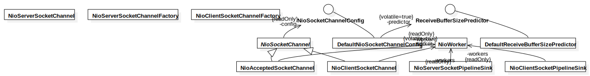

nio
UMLPackage
Untitled
::
JavaReverse
::
net
::
gleamynode
::
netty
::
channel
::
socket
::
nio
Description
none
Diagrams

Overview
Properties
Name
Value
name
nio
stereotype
null
visibility
public
importedElements
Owned Elements
NioSocketChannel
NioAcceptedSocketChannel
NioServerSocketPipelineSink
DefaultNioSocketChannelConfig
NioServerSocketChannel
NioWorker
NioClientSocketChannel
NioServerSocketChannelFactory
NioClientSocketChannelFactory
NioClientSocketPipelineSink
NioSocketChannelConfig
DefaultReceiveBufferSizePredictor
ReceiveBufferSizePredictor
Overview